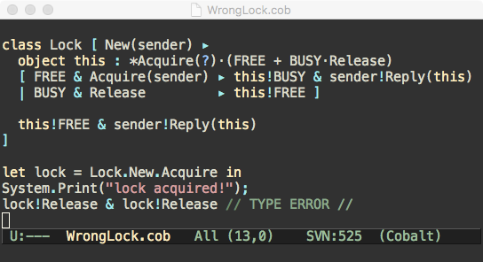

Cobalt is a behaviorally typed, mildly sugared version of the Objective Join Calculus (1) that can be used to write simple programs consisting of (concurrent) object definitions along with the corresponding object protocols. CobaltBlue is a tool that performs protocol and deadlock analysis of Cobalt programs: it checks that each object in the program is consistent with — and is used according to — its protocol; it checks that, if the program halts, all messages with relevant arguments have been consumed. The tool implements (an extension of) the type system described in (2) and (3).
Below is a summary of Cobalt’s main features and a simple example of (ill-typed) Cobalt program modeling a lock. 
Cobalt supports typestate and object-oriented programming in an naturally concurrent setting.
Native support for join patterns permits high-level, declarative programming of complex synchronization schemes.
Types in Cobalt provide a unified language for specifying object interfaces, their sequential and concurrent protocols, and aliasing control.
Object protocols can be specified partially. In many cases CobaltBlue is capable of inferring the omitted parts.
Equi-recursive types can be used to describe infinite protocols.
Cobalt supports state-dependent method types and a structural subtyping relation that enables the automatic inference of the protocol of objects with uncertain state.
Cobalt extends join patterns with inhibitors, which prevent the firing of a reaction in presence of certain messages. This feature is key for the precise typing of many concurrent objects.
Cobalt provides syntactic sugar for expressions, synchronous method invocations and method chaining, all of which are internally compiled into objects and asynchronous message passing.
CobaltBlue integrates an interpreter based on a simple implementation of the actor model. Each object is mapped to an actor.
For questions, suggestions and bug reports please contact Luca Padovani.
CobaltBlue 2.1 - bug fix (02/12/2017)
CobaltBlue 2.0 — deadlock analysis (06/11/2017)
CobaltBlue 1.0 — first public release (22/01/2017)
You need both GCC and GHC to compile CobaltBlue. Use of the Haskell Platform (full version) and Cabal is recommended.
CobaltBlue also needs an external solver to decide the validity of Presburger formulas. Currently, CobaltBlue can be configured to use either the LASH toolset (this is the default choice) or Z3. Configuring CobaltBlue for Z3 is simpler and can be done using only official Cabal packages, but requires nonetheless the installation of Z3 alongside CobalBlue. Using LASH requires some manual work (detailed below) but results in a self-contained executable. Also, LASH outperforms Z3 in processing the Presburger formulas generated by CobaltBlue.
Depending on the solver you choose, follow the instructions in the corresponding section below before compiling CobaltBlue.
Download and unpack LASH in the same folder containing
README.md, rename the top-level folder to lash and cd there:
wget http://www.montefiore.ulg.ac.be/~boigelot/research/lash/releases/lash-v0.92.tar.gz
tar xvfz lash-v0.92.tar.gz
mv lash-v0.92 lash
cd lash
On 64-bit architectures it is necessary to patch LASH:
patch -p1 <../lash64.diff
Compile LASH, go back to the main folder and configure CobaltBlue:
make
cd ..
cabal configure
Z3 can be installed in a number of ways depending on your OS and preferred package manager. On MacOS with homebrew, for example, this is achieved issuing the command
brew install z3
Configure CobaltBlue specifying the Z3 flag:
cabal configure -fZ3
Compile CobaltBlue:
cabal build
Check whether the provided examples are type checked successfully:
make check_examples
A Gentle Introduction to Concurrent TypeState-Oriented Programming with CobaltBlue.
The type system on which CobaltBlue is based has been described in (2), (3) and (4).
CobaltBlue’s type checking/inference algorithm and deadlock analysis will be detailed in forthcoming publications.
The CobaltBlue distribution includes an Emacs mode that provides basic syntax highlighting for Cobalt programs. Add the line
(load "<path to>/cobalt.el")
to your .emacs initialization file.
Cédric Fournet, Cosimo Laneve, Luc Maranget and Didier Rémy: Inheritance in the Join Calculus, Journal of Logic and Algebraic Programming, 2003. ↩
Silvia Crafa and Luca Padovani: The Chemical Approach to Typestate–Oriented Programming, Proceedings of OOPSLA, 2015. ↩
Silvia Crafa and Luca Padovani: The Chemical Approach to Typestate–Oriented Programming, ACM Transactions on Programming Languages and Systems, 2017. ↩
Luca Padovani: Deadlock–Free Typestate–Oriented Programming, Technical Report HAL 01628801, 2017. ↩